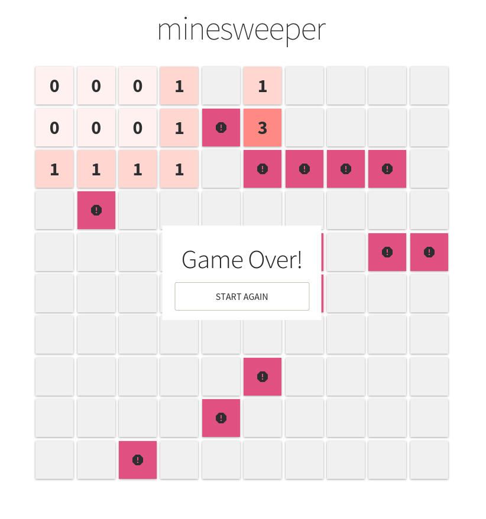

Ecosystem
General Computing
Build, Deploy or Embed Your Code
Julia lets you write UIs, statically compile your code, or even deploy it on a webserver. It also has powerful shell-like capabilities for managing other processes. It provides Lisp-like macros and other metaprogramming facilities.
Julia has foreign function interfaces for C/Fortran, C++, Python, R, Java, and many other languages. Julia can also be embedded in other programs through its embedding API. Specifically, Python programs can call Julia using PyJulia. R programs can do the same with R's JuliaCall, which is demonstrated by calling MixedModels.jl from R.
Parallel Computing
Parallel and Heterogeneous Computing
Julia is designed for parallelism, and provides built-in primitives for parallel computing at every level: instruction level parallelism, multi-threading and distributed computing. The Celeste.jl project achieved 1.5 PetaFLOP/s on the Cori supercomputer at NERSC using 650,000 cores.
The Julia compiler can also generate native code for various hardware accelerators, such as GPUs and Xeon Phis. Packages such as DistributedArrays.jl and Dagger.jl provide higher levels of abstraction for parallelism.
Machine Learning
Scalable Machine Learning
Julia provides powerful tools for deep learning (Flux.jl and Knet.jl), machine learning and AI. Julia’s mathematical syntax makes it an ideal way to express algorithms just as they are written in papers, build trainable models with automatic differentiation, GPU acceleration and support for terabytes of data with JuliaDB.
Julia's rich machine learning and statistics ecosystem includes capabilities for generalized linear models, decision trees, and clustering. You can also find packages for Bayesian Networks and Markov Chain Monte Carlo.
Scientific Computing
Rich Ecosystem for Scientific Computing
Julia is designed from the ground up to be very good at numerical and scientific computing. This can be seen in the abundance of scientific tooling written in Julia, such as the state-of-the-art differential equations ecosystem (DifferentialEquations.jl), optimization tools (JuMP.jl and Optim.jl), iterative linear solvers (IterativeSolvers.jl), a robust framework for Fourier transforms (AbstractFFTs.jl), a general purpose quantum simulation framework (Yao.jl), and many more, that can drive all your simulations.
Julia also offers a number of domain-specific ecosystems, such as in biology (BioJulia), operations research (JuliaOpt), image processing (JuliaImages), quantum physics (QuantumBFS, QuantumOptics), nonlinear dynamics (JuliaDynamics), quantitative economics (QuantEcon), astronomy (JuliaAstro) and ecology (EcoJulia). With a set of highly enthusiastic developers and maintainers from various parts of the scientific community, this ecosystem will only continue to get bigger and bigger.Data Science

Interact with your Data
The Julia data ecosystem lets you load multidimensional datasets quickly, perform aggregations, joins and preprocessing operations in parallel, and save them to disk in efficient formats. You can also perform online computations on streaming data with OnlineStats.jl. Whether you're looking for the convenient and familiar DataFrames, or a new approach with JuliaDB, Julia provides you a rich variety of tools. The Queryverse provides query, file IO and visualization functionality. In addition to working with tabular data, the JuliaGraphs packages make it easy to work with combinatorial data.
Julia can work with almost all databases using JDBC.jl and ODBC.jl drivers. In addition, it also integrates with the Hadoop ecosystem using Spark.jl, HDFS.jl, and Hive.jl.
Visualization

Data Visualization and Plotting
Data visualization has a complicated history. Plotting software makes trade-offs between features and simplicity, speed and beauty, and a static and dynamic interface. Some packages make a display and never change it, while others make updates in real-time.
Plots.jl is a visualization interface and toolset. It provides a common API across various backends, like GR.jl, PyPlot.jl, and PlotlyJS.jl. Users who prefer a more grammar of graphics style API might like the pure Julia Gadfly.jl plotting package. VegaLite.jl provides the Vega-Lite grammar of interactive graphics interface as a Julia package. For those who do not wish to leave the comfort of the terminal, there is also UnicodePlots.jl.